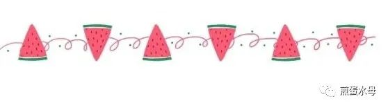
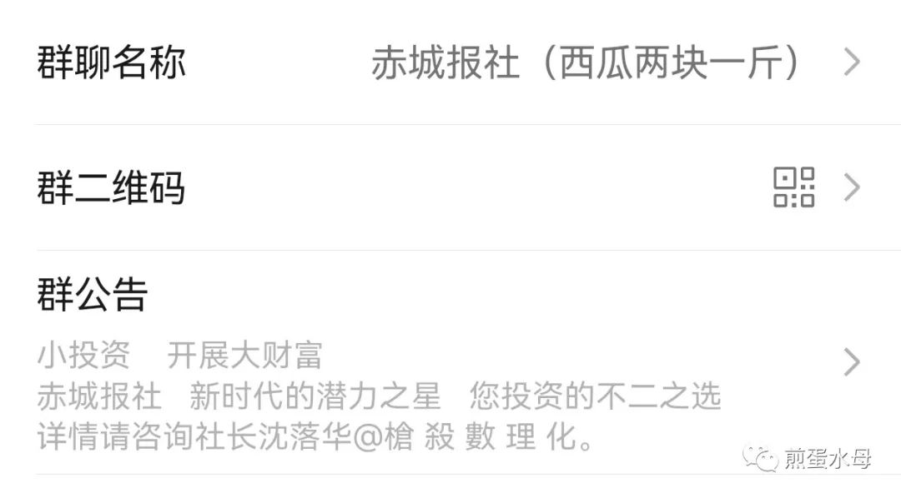
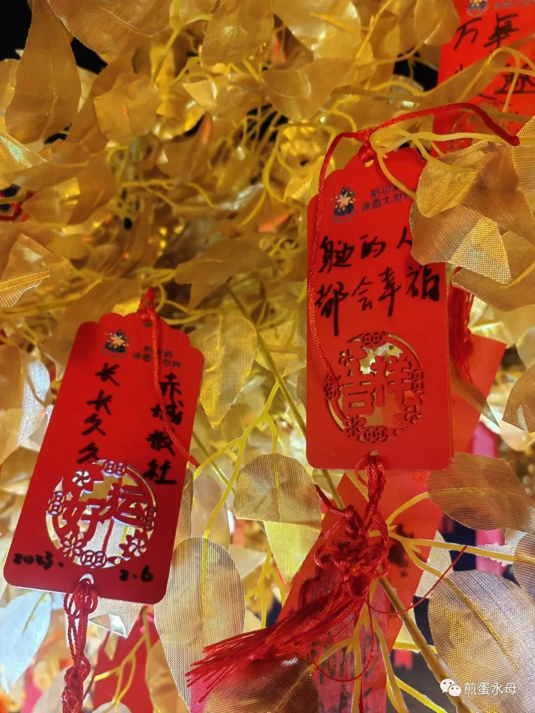

经过薛定谔的四个多月的各方筹划准备，现在我们终于可以很高兴的宣布，赤城报社公众号正式与大家见面了。
或许你们之中有人听说过它，那么我再格外很荣幸的告知你们，阔别两年已久，赤城报社与你们在互联网上再次相见了。
赤城报社是个挺普通的名字，赤城甚至是河北省张家口市真正存在的一个历史悠久的县城，不过这个名字最初其实来源于陈限方的小说。所以我并不打算更改。
创立公众号前，我想了很久，究竟要展现给大家什么。于是我决定追溯到一切的最初，让你们看到，赤城报社的第一版报纸，只是高二那年一张薄薄的语文试卷的二分之一。
在高压的学习环境之下，社长贪图享乐的天性暴露无遗。于是开始在自习课中，我将第一期报纸的内容写在空白的背面，将其命名为滴滴叭叭晚报，下课时再交到几个熟人手中传阅。
第二期时，我邀请了特邀编辑（他自封的！）陈限方。
第五期时，我邀请了美术总监陈子落。
至此，赤城报社正式成立。
 至今没吃的西瓜（小声bb最初的内容只是学校中的日常，后期我们开始用一些相当抽象的问题采访同学，写小说，画漫画，在考试前夕创办考试周报并在上面总结知识点。
当然，这之中受益最大的是我，因为我是我们三个里成绩最差的那个。（笑）
平常我们所用的纸面都是各种各样的试卷背面，包括但不限于数学学案，语文练习题，化学考卷，甚至社长从高一留存下来的历史提纲。只有在创作考试周报时才会用上一张“珍贵”的A4纸。
我们发的工资是橘子（社长亲自剥好的！），创作的时间是课间，读者是同班同学，就在这样条件艰苦的情况下，凭着一腔热血坚持了一年半。
某天，陈子落发现我们各自的笔名中有重合部分，沈落华和陈子落重合「落」字，陈子落和陈限方姓氏相同，而这并非事先约定。
于是我们的组合名出现了——落落大方。
 报社三人组哈尔滨之行 沈落华和陈子落挂在许愿树上的愿望这期间有过许多阻碍，譬如我们三个都江郎才尽，譬如高三时间紧，任务重，譬如陈限方一人拖稿拖到高考结束，创下历史新高。
高考前夕，由于各种原因，赤城报社的活动告一段落，最终的成果是十二期滴滴叭叭晚报，一期漫画周报，五期考试周报，一期迷你晚报。
除去丢失的第九期滴滴叭叭晚报，这些作品至今仍然躺在文件夹中。
我的初衷是划出一片能够互相分享生活的领域，这一点之前没有改变，之后也不会改变。无论如何，这都只是一个属于我们的世界，不会受任何限制。
最后是一如既往的抒情板块，我要感谢陈限方和陈子落，陪伴我从最初走到现在，感谢每一位曾经的读者，没有你们的支持与评价，就不会有今天的赤城报社。
如果你有耐心看到这里，那么同样很感谢你，感谢你为此付出的时间。
我不知道报社的未来会如何，不知道读者是否只会是朋友圈寥寥无几的几个人，在无聊时随手点进来，亦或是我们会做大做好，甚至吸纳新成员，创造一定的知名度.
但是我永远热爱这个报社，热爱我们曾经共同奋斗的时光，以及并肩同行的每一个人。
但行前路，莫问归期。
我是沈落华，很高兴认识你。
如果还会有下一篇的话，那么接下来的日子请多指教。